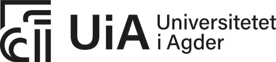

Forskningsprosjekt ved Universitetet i Agder
Vil du delta i evalueringen av ATLAS?

Dette er en invitasjon til å prøve ATLAS, en forskningsprototype for henvisninger til psykisk helsevern, og si hva du mener om den. Her står det hva evalueringen går ut på, og hva det betyr for deg å delta.
Til fastleger og til klinikere som vurderer henvisninger i DPS · Versjon 1, 18. oktober 2026
Formålet med evalueringen
Doktorgradsprosjektet «Klinisk beslutningstaking i henvisninger til psykisk helsevern» ved Universitetet i Agder undersøker hvordan fastleger og spesialister i DPS tar beslutninger om henvisninger, særlig når saken er usikker. Intervjuer med fastleger og DPS-spesialister ligger til grunn for ATLAS, en prototype av beslutningsstøtte for begge sider av henvisningen.
ATLAS viser hvor usikker en sak er, og hvilke kriterier en henvisning omtaler. Den anbefaler ikke hva du skal gjøre. Evalueringen skal finne ut hvordan klinikere opplever ATLAS: hva som er klart, hva som er nyttig, hva som står i veien, og om noe leses som et råd. Svarene brukes til å forbedre ATLAS og i doktorgradsavhandlingen.
Hvorfor får du spørsmål om å delta?
Du får spørsmålet fordi du er fastlege, eller fordi du vurderer henvisninger i et DPS. Du kan delta enten du var med i et intervju i prosjektet eller ikke.
Hva innebærer det å delta?
- Du bruker ATLAS i nettleseren på en datamaskin, i omtrent en time. Du kan ta pause og fortsette senere i samme nettleser.
- Du velger rolle, fastlege eller DPS, og får en kort omvisning i ATLAS.
- Du går gjennom tre fiktive pasientsaker. Hver sak ser du først uten ATLAS og deretter med ATLAS.
- Underveis svarer du på korte skjemaer i Nettskjema: om rollen og arbeidet ditt, om hver sak, om ATLAS som helhet og til slutt noen avsluttende spørsmål. Det finnes ingen riktige svar.
- Fastleger kan også se på to korte ekstrasaker hvis de vil, og DPS-klinikere på én kort ekstravisning. Du kan dessuten gi tilbakemelding på hvert skjermbilde underveis. Begge deler er frivillig.
Alle pasienter, klinikere og tall i ATLAS er fiktive. Ikke skriv opplysninger om ekte pasienter eller andre personer i skjemaene.
Det er frivillig å delta
Du kan avslutte når du vil, uten å oppgi grunn, og du kan hoppe over skjemaer du ikke vil svare på. Det får ingen følger for deg.
Du samtykker til å delta ved å krysse av for «Jeg har lest informasjonsskrivet og vil delta» i det første skjemaet.
Har du notert studienavnet ditt, kan du trekke svarene du har sendt: send navnet til prosjektleder, så slettes alle svar med det. Studienavnet står i hvert skjema og på oversikten i ATLAS. Uten studienavnet kan vi ikke finne svarene dine, fordi de ikke er knyttet til deg. Svar som allerede inngår i publiserte resultater, kan ikke tas ut av dem.
Ditt personvern
- ATLAS og skjemaene spør ikke etter navn, e-post, telefonnummer eller arbeidssted, og du logger ikke inn.
- Svarene dine knyttes sammen av et tilfeldig studienavn, for eksempel «Rolig elg 27». ATLAS lager det i nettleseren din når du velger rolle. Ingen har en liste som kobler studienavn til personer.
- Hvert skjema får automatisk med rollen din, studienavnet og hvilken versjon av ATLAS du brukte. Skjemaene i studien får også med om du deltok i et intervju i prosjektet, hvilket steg det gjelder og, for en sak eller en ekstravisning, hvilken. En tilbakemelding underveis får med hvilken side og del av ATLAS den gjelder.
- Svarene lagres i Nettskjema, en tjeneste for sikker datainnsamling som drives av Universitetet i Oslo. Bare forskerne i prosjektet har tilgang til dem.
- ATLAS husker hvor langt du har kommet, bare i nettleseren din, slik at du kan ta pause. ATLAS har ingen analyseverktøy og ingen sporing. Nettsiden ligger hos GitHub Pages, som registrerer IP-adressene til besøkende av sikkerhetshensyn. Prosjektet har ikke tilgang til dem.
- Bruker du en datamaskin som andre også bruker, kan neste person velge «Ikke deg? Start som ny deltaker» når ATLAS åpnes igjen, og få sitt eget studienavn.
Resultatene publiseres i doktorgradsavhandlingen og i vitenskapelige artikler, som samlede resultater og korte sitater fra fritekstsvar, uten opplysninger som kan identifisere deg.
Pilotrunde. Før studien starter, prøves ATLAS i en pilotrunde. Svarene fra pilotrunden merkes som pilot og brukes bare til å prøve ut ATLAS og skjemaene. De holdes utenfor studiens data. Mens pilotrunden pågår, står det «Pilot» øverst i ATLAS.
Hva skjer med svarene når prosjektet er ferdig?
Prosjektet skal etter planen avsluttes i januar 2027. Etter det kan svarene lagres videre i anonymisert form, slik at forskningen kan etterprøves.
Hvem er ansvarlig?
Universitetet i Agder er ansvarlig for prosjektet. Evalueringen gjøres av stipendiat Jishnu Das, veiledet av Geir Inge Hausvik og Carl Erik Moe. Doktorgradsprosjektet er vurdert av Personverntjenester i Sikt (referanse 480551).
Spørsmål?
Ta kontakt hvis du har spørsmål om evalueringen eller om personvern.
- Prosjektleder
- Jishnu Das, stipendiat, Institutt for informasjonssystemer, Universitetet i Agder: jishnu.das@uia.no
- Veiledere
- Geir Inge Hausvik: geir.i.hausvik@uia.no
Carl Erik Moe: carl.e.moe@uia.no
- Personvernombud ved UiA
- Trond Hauso: trond.hauso@uia.no
- Personverntjenester i Sikt
- personverntjenester@sikt.no, telefon 73 98 40 40
Med vennlig hilsen
Geir Inge Hausvik
Veileder
Research project at the University of Agder
Would you like to take part in the evaluation of ATLAS?
This is an invitation to try ATLAS, a research prototype for referrals to mental health care, and to say what you think of it. This letter explains what the evaluation involves and what taking part means for you.
For GPs and for clinicians who assess referrals at a DPS · Version 1, 18 October 2026
Purpose of the evaluation
The PhD project ‘Clinical decision-making in mental health referrals’ at the University of Agder studies how GPs and specialists at DPS (district psychiatric centres) make decisions about referrals, especially when a case is uncertain. Interviews with GPs and DPS specialists are the basis for ATLAS, a prototype of decision support for both sides of a referral.
ATLAS shows how uncertain a case is and which criteria a referral speaks to. It does not recommend what to do. The evaluation looks at how clinicians experience ATLAS: what is clear, what is useful, what gets in the way, and whether anything reads as advice. The answers are used to improve ATLAS and in the doctoral thesis.
Why are you being asked?
You are being asked because you are a GP, or because you assess referrals at a DPS. You can take part whether or not you were interviewed in the project.
What does taking part involve?
- You use ATLAS in a web browser on a computer, for about an hour. You can take a break and continue later in the same browser.
- You choose a role, GP or DPS, and get a short tour of ATLAS.
- You work through three fictional patient cases. You see each case first without ATLAS and then with ATLAS.
- Along the way you answer short forms in Nettskjema: about your role and work, about each case, about ATLAS as a whole, and a few closing questions. There are no right answers.
- GPs can also look at two short extra cases if they wish, and DPS clinicians at one short extra view. You can also give feedback on any screen along the way. Both are optional.
All patients, clinicians and figures in ATLAS are fictional. Do not write information about real patients or other people in the forms.
Taking part is voluntary
You can stop whenever you like, without giving a reason, and you can skip forms you do not want to answer. This has no consequences for you.
You consent to take part by ticking ‘I have read the information letter and want to take part’ in the first form.
If you have noted your study name, you can withdraw the answers you have sent: send the name to the project leader, and every answer with it will be deleted. The study name is shown in every form and on the overview in ATLAS. Without the study name we cannot find your answers, because they are not linked to you. Answers already included in published results cannot be taken out of them.
Your privacy
- ATLAS and the forms do not ask for your name, email, phone number or workplace, and you do not sign in.
- Your answers are linked by a random study name, for example ‘Rolig elg 27’. ATLAS makes it in your browser when you choose a role. Nobody has a list that links study names to people.
- Each form automatically includes your role, the study name and which version of ATLAS you used. The study’s forms also include whether you took part in an interview in the project, which step the form belongs to and, for a case or an extra view, which one. Feedback along the way includes which page and part of ATLAS it is about.
- The answers are stored in Nettskjema, a service for secure data collection run by the University of Oslo. Only the researchers in the project have access to them.
- ATLAS remembers how far you have come, only in your browser, so you can take a break. ATLAS has no analytics and no tracking. The site is hosted on GitHub Pages, which logs visitors’ IP addresses for security purposes. The project has no access to them.
- If you use a computer that others also use, the next person can choose ‘Not you? Start as a new participant’ when ATLAS opens again, and get a study name of their own.
The results are published in the doctoral thesis and in scientific articles, as aggregated results and short quotes from free-text answers, without anything that could identify you.
Pilot round. Before the study starts, ATLAS is tried in a pilot round. Answers from the pilot round are marked as pilot and used only to try out ATLAS and the forms. They are kept out of the study’s data. While the pilot round runs, ATLAS shows ‘Pilot’ at the top.
What happens to the answers when the project ends?
The project is planned to end in January 2027. After that, the answers may be kept in anonymised form, so the research can be checked.
Who is responsible?
The University of Agder is responsible for the project. The evaluation is carried out by PhD research fellow Jishnu Das, supervised by Geir Inge Hausvik and Carl Erik Moe. The doctoral project has been assessed by Data Protection Services at Sikt (reference 480551).
Questions?
Get in touch if you have questions about the evaluation or about privacy.
- Project leader
- Jishnu Das, PhD research fellow, Department of Information Systems, University of Agder: jishnu.das@uia.no
- Supervisors
- Geir Inge Hausvik: geir.i.hausvik@uia.no
Carl Erik Moe: carl.e.moe@uia.no
- Data protection officer at UiA
- Trond Hauso: trond.hauso@uia.no
- Data Protection Services at Sikt
- personverntjenester@sikt.no, phone +47 73 98 40 40
Kind regards
Geir Inge Hausvik
Supervisor